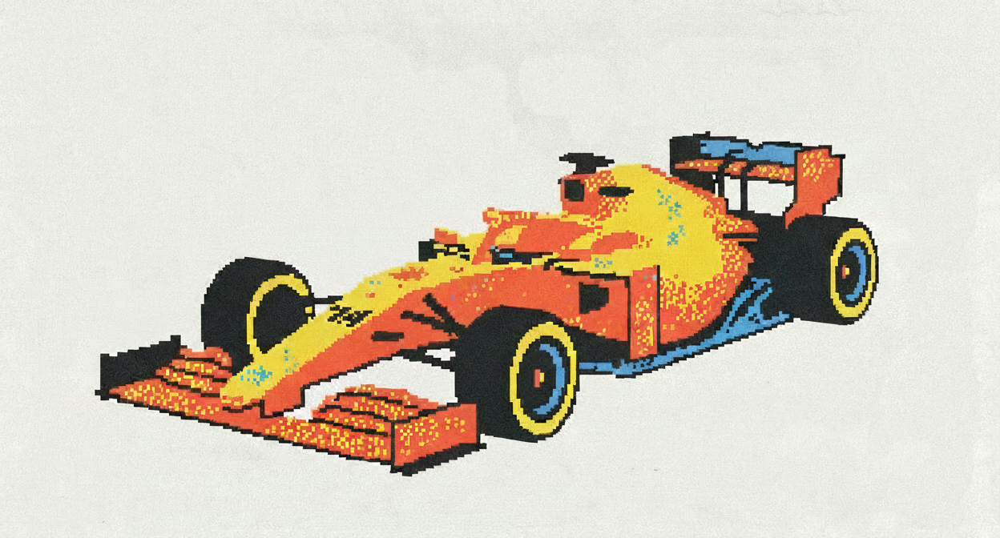

SCROLL TO ENTER
↓
SAHARA STAGE · 01
00:00.000
DRIFT
0
KM/H
❚❚
DESIGNED NOTABLES · SAHARA STAGE
KASI
RALLY
TARMAC. SAND. ONE CLOCK. NO MERCY.
START ENGINE
WASD / ARROWS — DRIVE · SPACE — HANDBRAKE · ESC / P — PAUSE · R — RETRY
3D VEHICLE & CAMP MODELS: KENNEY.NL STARTER KIT RACING (CC0) · EVERYTHING ELSE PROCEDURAL
3
PAUSED
RESUME
RESTART STAGE
QUIT TO MENU
STAGE COMPLETE
FINISH
.
FINAL TIME
—
TOP SPEED
—
DRIFT SCORE
—
SESSION BEST
—
RETRY
MENU